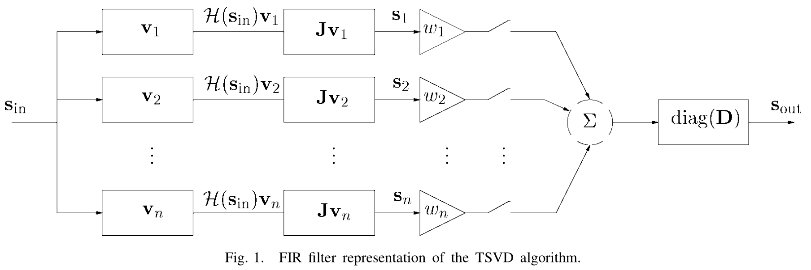
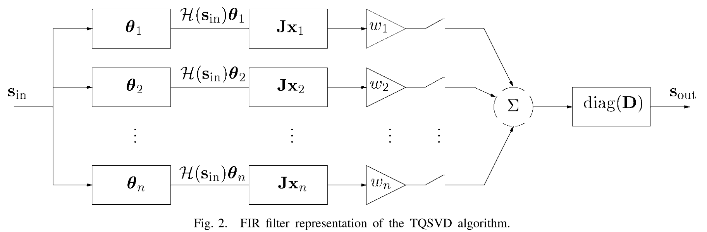

写在前面 这一篇介绍了奇异谱分析与滤波器的关系，通过特征向量构造的特征滤波器可以用来描述奇异谱分析的二阶导滤波器。特殊结构的矩阵对应的滤波器具有更强的结论。此外本文还附带了降秩问题的滤波器视角，分别从截断奇异值分解和截断商奇异值分解两个方面介绍。
奇异谱分析 给定长度为N N N x = ( x 0 , … , x n , … , x N ) \mathbf x=(x_0,\ldots,x_n,\ldots,x_N) x = ( x 0 , … , x n , … , x N ) A \mathbf A A A \mathbf A A
A = U Σ V T = ∑ r = 1 rank ( A ) σ r u r v r T \mathbf A=\mathbf U\mathbf \Sigma \mathbf V^T=\sum_{r=1}^{\text{rank}(A)}\sigma_r \mathbf u_r \mathbf v_r^T
A = U Σ V T = r = 1 ∑ rank ( A ) σ r u r v r T
根据特征值分解和奇异值分解的关系，有
A A T u r = σ r 2 u r A T A v r = σ r 2 v r U T A = U T U Σ V T = Σ V T A T u r = σ r v r \begin{aligned}
\mathbf A\mathbf A^T \mathbf u_r &= \sigma_r^2 \mathbf u_r\\
\mathbf A^T\mathbf A\mathbf v_r &= \sigma_r^2 \mathbf v_r\\
\mathbf U^T\mathbf A &= \mathbf U^T\mathbf U\mathbf \Sigma \mathbf V^T = \Sigma \mathbf V^T\\
\mathbf A^T \mathbf u_r &= \sigma_r\mathbf v_r
\end{aligned}
A A T u r A T A v r U T A A T u r = σ r 2 u r = σ r 2 v r = U T U Σ V T = Σ V T = σ r v r
记主成分w r = σ r v r = A T u r \mathbf w_r=\sigma_r \mathbf v_r=\mathbf A^T \mathbf u_r w r = σ r v r = A T u r k + 1 k+1 k + 1
w k ( r ) = ∑ l = 0 L − 1 u l ( r ) x l + k w_k^{(r)}=\sum_{l=0}^{L-1}u_l^{(r)}x_{l+k}
w k ( r ) = l = 0 ∑ L − 1 u l ( r ) x l + k
记第r r r A r = σ r u r v r T = u r w r T \mathbf A_r=\sigma_r \mathbf u_r \mathbf v_r^T=\mathbf u_r\mathbf w_r^T A r = σ r u r v r T = u r w r T
∥ A r ∥ 2 = σ r 2 , ∥ A ∥ 2 = ∑ r = 1 rank ( A ) σ r 2 \|\mathbf A_r\|^2=\sigma_r^2,\|\mathbf A\|^2=\sum_{r=1}^{\text{rank}(A)}\sigma_r^2
∥ A r ∥ 2 = σ r 2 , ∥ A ∥ 2 = r = 1 ∑ rank ( A ) σ r 2
分组步骤则是将基本矩阵{ A r ∣ r = 1 , … , rank ( A ) } \{\mathbf A_r|r=1,\ldots,\text{rank}(A)\} { A r ∣ r = 1 , … , rank ( A ) } { A r ∣ r ∈ I m } \{\mathbf A_r|r\in I_m\} { A r ∣ r ∈ I m }
A I m = ∑ r ∈ I m A r \mathbf A_{I_m}=\sum_{r\in I_m}\mathbf A_r
A I m = r ∈ I m ∑ A r
对角平均步骤则是从分组的基本矩阵A I m \mathbf A_{I_m} A I m N N N
x ~ n ( r ) = { 1 n + 1 ∑ i = 0 n u i ( r ) w n − i ( r ) for 0 ≤ n < L − 1 1 L ∑ i = 0 L − 1 u i ( r ) w n − i ( r ) for L − 1 ≤ n < K , 1 N − n ∑ i = n − K + 1 N − K u i ( r ) w n − i ( r ) for K ≤ n < N \widetilde{\mathbf{x}}_{n}^{(r)}=\left\{\begin{array}{ll}
\frac{1}{n+1} \sum_{i=0}^{n} u_{i}^{(r)} w_{n-i}^{(r)} & \text { for } 0 \leq n<L-1 \\
\frac{1}{L} \sum_{i=0}^{L-1} u_{i}^{(r)} w_{n-i}^{(r)} & \text { for } L-1 \leq n<K, \\
\frac{1}{N-n} \sum_{i=n-K+1}^{N-K} u_{i}^{(r)} w_{n-i}^{(r)} & \text { for } K \leq n<N
\end{array}\right.
x n ( r ) = ⎩ ⎪ ⎪ ⎨ ⎪ ⎪ ⎧ n + 1 1 ∑ i = 0 n u i ( r ) w n − i ( r ) L 1 ∑ i = 0 L − 1 u i ( r ) w n − i ( r ) N − n 1 ∑ i = n − K + 1 N − K u i ( r ) w n − i ( r ) for 0 ≤ n < L − 1 for L − 1 ≤ n < K , for K ≤ n < N
滤波器性质 向量w r \mathbf w_r w r x \mathbf x x u r \mathbf u_r u r
F r ( z ) = ∑ l = 0 L − 1 u Z − l ( r ) z − l = ∑ l = 0 L − 1 u l ( r ) z Z − l F_r(z)=\sum_{l=0}^{L-1} u_{Z-l}^{(r)}z^{-l}=\sum_{l=0}^{L-1} u_{l}^{(r)}z^{Z-l}
F r ( z ) = l = 0 ∑ L − 1 u Z − l ( r ) z − l = l = 0 ∑ L − 1 u l ( r ) z Z − l
对角平均步骤也可视为一个滑动平均滤波器，其系数为由特征向量u r \mathbf u_r u r
G r ( z ) = 1 L ∑ l = 0 L − 1 u l ( r ) z l G_r(z)=\frac{1}{L}\sum_{l=0}^{L-1}u_l^{(r)}z^l
G r ( z ) = L 1 l = 0 ∑ L − 1 u l ( r ) z l
SSA的其他步骤不涉及滤波器，因此也可将SSA视为一个二阶段滤波器。整个传递函数可由分解步骤的滤波器F r ( z ) F_r(z) F r ( z ) G r ( z ) G_r(z) G r ( z )
H r ( z ) = F r ( z ) G r ( z ) = 1 L ∑ l = − ( L − 1 ) L − 1 v l ( r ) z l H_r(z)=F_r(z)G_r(z)=\frac{1}{L}\sum_{l=-(L-1)}^{L-1}v_l^{(r)}z^l
H r ( z ) = F r ( z ) G r ( z ) = L 1 l = − ( L − 1 ) ∑ L − 1 v l ( r ) z l
由于滤波器F r ( z ) F_r(z) F r ( z ) G r ( z ) G_r(z) G r ( z )
v l ( r ) = v − l ( r ) , l = 1 , … , L − 1 v_l^{(r)}=v_{-l}^{(r)},l=1,\ldots,L-1
v l ( r ) = v − l ( r ) , l = 1 , … , L − 1
实际上，这种对称性会导致实数值传递函数以及相关的频率响应
H r ( z ) = ∑ l = − ( L − 1 ) L − 1 v l ( r ) e j 2 π l f = v 0 ( r ) + ∑ l = 1 L − 1 2 v l ( r ) cos ( j 2 π l f ) H_r(z)=\sum_{l=-(L-1)}^{L-1}v_l^{(r)}e^{j2\pi lf}=v_0^{(r)}+\sum_{l=1}^{L-1}2v_l^{(r)}\cos(j2\pi lf)
H r ( z ) = l = − ( L − 1 ) ∑ L − 1 v l ( r ) e j 2 π l f = v 0 ( r ) + l = 1 ∑ L − 1 2 v l ( r ) cos ( j 2 π l f )
滤波器H r ( z ) H_r(z) H r ( z ) [ L , K ] [L,K] [ L , K ]
周期图 周期图(periodogram)P x \mathcal P_x P x
P x ( k / N ) = ∣ ∑ n = 0 N − 1 x n e − j 2 π k n / N ∣ 2 = ∣ X k ∣ 2 \mathcal P_x(k/N)=\left|\sum_{n=0}^{N-1}x_ne^{-j2\pi kn/N}\right|^2=\left|X_k\right|^2
P x ( k / N ) = ∣ ∣ ∣ ∣ ∣ ∣ n = 0 ∑ N − 1 x n e − j 2 π k n / N ∣ ∣ ∣ ∣ ∣ ∣ 2 = ∣ X k ∣ 2
其中序列的离散傅里叶变换(DFT)X k = ∑ n = 0 N − 1 x n e − j 2 π n k / N X_k=\sum_{n=0}^{N-1}x_ne^{-j2\pi nk/N} X k = ∑ n = 0 N − 1 x n e − j 2 π n k / N
Π x ( k / N ) = 1 N { 2 ∣ X k ∣ 2 , 0 < k < N / 2 ∣ X k ∣ 2 , k = 0 , or N / 2 ( N is even) \Pi_x(k/N)=\frac{1}{N}
\begin{cases}
2\left|X_k\right|^2,&0<k<N/2\\
\left|X_k\right|^2,&k=0 \text{, or } N/2 \text{($N$ is even)}
\end{cases}
Π x ( k / N ) = N 1 { 2 ∣ X k ∣ 2 , ∣ X k ∣ 2 , 0 < k < N / 2 k = 0 , or N / 2 ( N is even)
显然有
∑ n = 1 N x n 2 = ∑ k = 0 ⌊ N / 2 ⌋ Π x ( k / N ) \sum_{n=1}^Nx_n^2=\sum_{k=0}^{\lfloor N/2\rfloor}\Pi_x(k/N)
n = 1 ∑ N x n 2 = k = 0 ∑ ⌊ N / 2 ⌋ Π x ( k / N )
特征滤波器的频率特性 周期图是基于DFT的频谱估计方法，特征滤波器的频率响应可通过周期图来估计。但是周期图频率集合是离散且L L L L L L δ f = f s L \delta_f = \frac{f_s}{L} δ f = L f s
当L L L { f Π ( k ) = ( 0 , 1 N , 2 N , … , ⌊ N / 2 ⌋ N ) f s } \{f_\Pi(k)=(0,\frac{1}{N},\frac{2}{N},\ldots,\frac{\lfloor N/2\rfloor}{N})f_s\} { f Π ( k ) = ( 0 , N 1 , N 2 , … , N ⌊ N / 2 ⌋ ) f s }
另一方面，滤波器的频率响应完全由特征向量组成的系数决定。 因此，H r ( f ) H_r(f) H r ( f )
降秩问题与FIR滤波 去噪导向的降秩算法步骤如下：
该流程的核心是截断奇异值分解(TSVD)。信号的预白化涉及的变化是一个滤波器构造的降秩矩阵，可以通过截断的商奇异值分解(TQSVD)来获得。通过无穷序列信号和谱分析可以阐述降秩技术的谱性质。SVD可产生信号的能量分解，大的奇异值对应的重构信号分量是功率较高的分量。但是，到目前为止，对于应用于有限持续时间（短时间）信号的秩降低的频谱行为，尚未得出明确的结果。
符号说明 令n × n n\times n n × n J J J J J J J J JJ J J H ( x ) \mathcal H(\boldsymbol x) H ( x ) H p ( x ) \mathcal H_p(\boldsymbol x) H p ( x )
H ( x ) = ( x 1 x 2 … x n x 2 x 3 … x n + 1 ⋮ ⋮ ⋮ x m x m + 1 … x N ) H p ( x ) = ( 0 0 … x 1 ⋮ ⋮ ⋮ 0 x 1 … x n − 1 x 1 x 2 … x n x 2 x 3 … x n + 1 ⋮ ⋮ ⋮ x m x m + 1 … x N x m + 1 x m + 2 … 0 ⋮ ⋮ ⋮ x N 0 … 0 ) \begin{aligned}
\mathcal H(\boldsymbol x)=\begin{pmatrix}
x_1&x_2&\ldots&x_n\\
x_2&x_3&\ldots&x_{n+1}\\
\vdots&\vdots&&\vdots\\
x_m&x_{m+1}&\ldots&x_{N}
\end{pmatrix}\\
\mathcal H_p(\boldsymbol x)=\begin{pmatrix}
0&0&\ldots&x_1\\
\vdots&\vdots&&\vdots\\
0&x_1&\ldots&x_{n-1}\\
x_1&x_2&\ldots&x_n\\
x_2&x_3&\ldots&x_{n+1}\\
\vdots&\vdots&&\vdots\\
x_m&x_{m+1}&\ldots&x_{N}\\
x_{m+1}&x_{m+2}&\ldots&0\\
\vdots&\vdots&&\vdots\\
x_N&0&\ldots&0
\end{pmatrix}
\end{aligned}
H ( x ) = ⎝ ⎜ ⎜ ⎜ ⎜ ⎛ x 1 x 2 ⋮ x m x 2 x 3 ⋮ x m + 1 … … … x n x n + 1 ⋮ x N ⎠ ⎟ ⎟ ⎟ ⎟ ⎞ H p ( x ) = ⎝ ⎜ ⎜ ⎜ ⎜ ⎜ ⎜ ⎜ ⎜ ⎜ ⎜ ⎜ ⎜ ⎜ ⎜ ⎜ ⎜ ⎜ ⎜ ⎛ 0 ⋮ 0 x 1 x 2 ⋮ x m x m + 1 ⋮ x N 0 ⋮ x 1 x 2 x 3 ⋮ x m + 1 x m + 2 ⋮ 0 … … … … … … … x 1 ⋮ x n − 1 x n x n + 1 ⋮ x N 0 ⋮ 0 ⎠ ⎟ ⎟ ⎟ ⎟ ⎟ ⎟ ⎟ ⎟ ⎟ ⎟ ⎟ ⎟ ⎟ ⎟ ⎟ ⎟ ⎟ ⎟ ⎞
可以通过改变Hankel矩阵的列来构造Toeplitz矩阵，即 T ( x ) = H ( x ) J , T p ( x ) = H p ( x ) J \mathcal T(\boldsymbol x)=\mathcal H(\boldsymbol x)J,\mathcal T_p(\boldsymbol x)=\mathcal H_p(\boldsymbol x)J
T ( x ) = H ( x ) J , T p ( x ) = H p ( x ) J
矩阵H ( x ) \mathcal H(\boldsymbol x) H ( x ) H p ( x ) \mathcal H_p(\boldsymbol x) H p ( x ) y \boldsymbol y y x \boldsymbol x x y \boldsymbol y y
区别在于H ( x ) y \mathcal H(\boldsymbol x)\boldsymbol y H ( x ) y m < N m<N m < N H p ( x ) y \mathcal H_p(\boldsymbol x)\boldsymbol y H p ( x ) y N + n − 1 N+n-1 N + n − 1
类似的，矩阵T ( x ) \mathcal T(\boldsymbol x) T ( x ) T p ( x ) \mathcal T_p(\boldsymbol x) T p ( x ) y \boldsymbol y y x \boldsymbol x x
T ( x ) y = H ( x ) ( J y ) , T p ( x ) y = H p ( x ) ( J y ) , \mathcal T(\boldsymbol x)\boldsymbol y=\mathcal H(\boldsymbol x)(J\boldsymbol y),\mathcal T_p(\boldsymbol x)\boldsymbol y=\mathcal H_p(\boldsymbol x)(J\boldsymbol y),
T ( x ) y = H ( x ) ( J y ) , T p ( x ) y = H p ( x ) ( J y ) ,
对角平均算子A \mathcal A A M M M s = A ( M ) \boldsymbol s=\mathcal A(M) s = A ( M ) H ( s ) \mathcal H(\boldsymbol s) H ( s ) M M M
s i = 1 β − α + 1 ∑ k = α β M i − k + 1 , k \boldsymbol s_i=\frac{1}{\beta-\alpha+1}\sum_{k=\alpha}^{\beta}M_{i-k+1,k}
s i = β − α + 1 1 k = α ∑ β M i − k + 1 , k
其中α = max ( 1 , i − m + 1 ) , β = min ( n , i ) \alpha=\max(1,i-m+1),\beta=\min(n,i) α = max ( 1 , i − m + 1 ) , β = min ( n , i ) M M M M = u v T M=\boldsymbol u\boldsymbol v^T M = u v T
A ( M ) = A ( u v T ) = D T p ( u ) v \mathcal A(M)=\mathcal A(\boldsymbol u\boldsymbol v^T)=D\mathcal T_p(\boldsymbol u)\boldsymbol v
A ( M ) = A ( u v T ) = D T p ( u ) v
其中N × N N\times N N × N D = diag ( 1 , 2 − 1 , … , μ − 1 , … , μ − 1 , … , 2 − 1 , 1 ) D=\text{diag}(1,2^{-1},\ldots,\mu^{-1},\ldots,\mu^{-1},\ldots,2^{-1},1) D = diag ( 1 , 2 − 1 , … , μ − 1 , … , μ − 1 , … , 2 − 1 , 1 ) μ = min ( m , n ) \mu=\min(m,n) μ = min ( m , n )
截断奇异值分解的滤波器表示 对给定的输入信号s i n \boldsymbol s_{in} s i n
H = H ( s in ) = ∑ i = 1 n σ i u i v i T H=\mathcal H(\boldsymbol s_{\text{in}})=\sum_{i=1}^{n}\sigma_i \boldsymbol u_i \boldsymbol v_i^T
H = H ( s in ) = i = 1 ∑ n σ i u i v i T
截断奇异值分解则保留前k k k k k k H k H_k H k H H H
H k = ∑ i = 1 k w i σ i u i v i T H_k=\sum_{i=1}^{k}w_i\sigma_i \boldsymbol u_i \boldsymbol v_i^T
H k = i = 1 ∑ k w i σ i u i v i T
当权值w i = 1 w_i=1 w i = 1 H k H_k H k w i = 1 − σ noies 2 σ i 2 w_i=1-\frac{\sigma_{\text{noies}}^2}{\sigma_i^2} w i = 1 − σ i 2 σ noies 2 H k H_k H k σ noies \sigma_{\text{noies}} σ noies
接下来需要从秩k k k H k H_k H k
s out = A ( H k ) = A ( ∑ i = 1 k w i σ i u i v i T ) = ∑ i = 1 k w i A ( σ i u i v i T ) = ∑ i = 1 k w i D T p ( σ i u i ) v i = D ∑ i = 1 k w i T p ( H v i ) v i = D ∑ i = 1 k w i H p ( H v i ) ( J v i ) = D ∑ i = 1 k w i H p ( H ( s in ) v i ) ( J v i ) \begin{aligned}
\boldsymbol s_{\text{out}}&=\mathcal A(H_k)\\
&=\mathcal A(\sum_{i=1}^{k}w_i\sigma_i \boldsymbol u_i \boldsymbol v_i^T)\\
&=\sum_{i=1}^{k}w_i\mathcal A(\sigma_i \boldsymbol u_i \boldsymbol v_i^T)\\
&=\sum_{i=1}^{k}w_i D\mathcal T_p(\sigma_i \boldsymbol u_i)\boldsymbol v_i\\
&=D\sum_{i=1}^{k}w_i \mathcal T_p(H \boldsymbol v_i)\boldsymbol v_i\\
&=D\sum_{i=1}^{k}w_i \mathcal H_p(H \boldsymbol v_i)(J\boldsymbol v_i)\\
&=D\sum_{i=1}^{k}w_i \mathcal H_p(\mathcal H(\boldsymbol s_{\text{in}}) \boldsymbol v_i)(J\boldsymbol v_i)
\end{aligned}
s out = A ( H k ) = A ( i = 1 ∑ k w i σ i u i v i T ) = i = 1 ∑ k w i A ( σ i u i v i T ) = i = 1 ∑ k w i D T p ( σ i u i ) v i = D i = 1 ∑ k w i T p ( H v i ) v i = D i = 1 ∑ k w i H p ( H v i ) ( J v i ) = D i = 1 ∑ k w i H p ( H ( s in ) v i ) ( J v i )
记s i = H p ( H ( s in ) v i ) ( J v i ) \boldsymbol s_i=\mathcal H_p(\mathcal H(\boldsymbol s_{\text{in}}) \boldsymbol v_i)(J\boldsymbol v_i) s i = H p ( H ( s in ) v i ) ( J v i ) s out = D ∑ i = 1 k w i s i \boldsymbol s_{\text{out}}=D\sum_{i=1}^{k}w_i \boldsymbol s_i s out = D ∑ i = 1 k w i s i
对于每个s i \boldsymbol s_i s i
H ( s in ) v i \mathcal H(\boldsymbol s_{\text{in}}) \boldsymbol v_i H ( s in ) v i s in \boldsymbol s_{\text{in}} s in v i \boldsymbol v_i v i s i \boldsymbol s_i s i H ( s in ) v i \mathcal H(\boldsymbol s_{\text{in}}) \boldsymbol v_i H ( s in ) v i J v i J\boldsymbol v_i J v i 根据J J J 滤波器v i \boldsymbol v_i v i J v i J\boldsymbol v_i J v i 由特征向量v i \boldsymbol v_i v i 截断奇异值分解的滤波器图示 
该示意图包含n n n
如果仅打开前k k k 如果打开所有开关且设w i = 1 w_i=1 w i = 1 截断商奇异值分解 上面的截断奇异值分解仅适用于高斯白噪声，而对于有色噪声(color)，预白化(prewhitening)和去白化(dewhitening)是非常常见的信号处理方法。下面则对商奇异值分解进行截断。
由广义的奇异值分解可知，矩阵对( H ( s in ) , H ( e ) ) (\mathcal H(\boldsymbol s_{\text{in}}),\mathcal H(\boldsymbol e)) ( H ( s in ) , H ( e ) )
H ( s in ) = ∑ i = 1 n δ i u ^ i x i T , H ( e ) = ∑ i = 1 n μ i v ^ i x i T \mathcal H(\boldsymbol s_{\text{in}})=\sum_{i=1}^n\delta_i \hat {\boldsymbol u}_i\boldsymbol x_i^T,\mathcal H(\boldsymbol e)=\sum_{i=1}^n\mu_i \hat {\boldsymbol v}_i\boldsymbol x_i^T
H ( s in ) = i = 1 ∑ n δ i u ^ i x i T , H ( e ) = i = 1 ∑ n μ i v ^ i x i T
其中u ^ i , v ^ i \hat {\boldsymbol u}_i,\hat {\boldsymbol v}_i u ^ i , v ^ i x i \boldsymbol x_i x i δ i 2 + μ i 2 = 1 \delta_i^2+\mu_i^2=1 δ i 2 + μ i 2 = 1 { δ i μ i } \{\frac{\delta_i}{\mu_i}\} { μ i δ i } H ( s in ) \mathcal H(\boldsymbol s_{\text{in}}) H ( s in ) k k k
Z k = ∑ i = 1 k w i δ i u ^ i x i T Z_k=\sum_{i=1}^{k}w_i\delta_i \hat {\boldsymbol u}_i\boldsymbol x_i^T
Z k = i = 1 ∑ k w i δ i u ^ i x i T
类似于前面的截断奇异值分解，截断商奇异值分解的重构信号为
s out = A ( Z k ) = D ∑ i = 1 k w i H p ( H ( s in ) θ i ) ( J x i ) \boldsymbol s_{\text{out}}=\mathcal A(Z_k)=D\sum_{i=1}^{k}w_i \mathcal H_p(\mathcal H(\boldsymbol s_{\text{in}}) \boldsymbol \theta_i)(J\boldsymbol x_i)
s out = A ( Z k ) = D i = 1 ∑ k w i H p ( H ( s in ) θ i ) ( J x i )
其中需要注意构造一个双正交的向量组( θ 1 , … , θ n ) T = ( x 1 , … , x n ) − 1 (\boldsymbol \theta_1,\ldots,\boldsymbol \theta_n)^T=(x_1,\ldots,x_n)^{-1} ( θ 1 , … , θ n ) T = ( x 1 , … , x n ) − 1 θ i T x j = 1 \boldsymbol \theta_i^Tx_j=1 θ i T x j = 1 H θ i = δ i u ^ i H\boldsymbol \theta_i=\delta_i\hat {\boldsymbol u}_i H θ i = δ i u ^ i
截断商奇异值分解的滤波器图示 
每个分支的滤波器由滤波器θ i \boldsymbol \theta_i θ i J x i J\boldsymbol x_i J x i
References